Cooling Fan Kit Installation
Purpose
This procedure provides instructions to install the Cooling Fan Assembly Kit for the PC Bay.
The dual chassis fan assembly normally installed on the left side of the Panther System does not provide adequate cooling capability for the Panther Fusion Computer Bay. The Cooling Fan Kit adds an extra fan mounted over the 24V power supply at the rear of the Computer Bay to provide extra cooling.
This procedure can only be performed on a Panther System that has the dual chassis fan assembly installed. Any system that still has the single chassis fan cannot have the new Cooling Fan Kit installed (unless the Panther System is upgraded to the dual fan assembly).

|
Note—The dual fan assembly was cut in on Serial# 00281 and above; some systems below 00281 may have been upgraded to the dual fan. |
Parts and Materials Required
- FSE Tool Kit
 Fusion Cooling Fan Assembly Kit
Fusion Cooling Fan Assembly Kit
- (1) Fan Duct, Power Supply Mounted
- (3) Harnessed Fans, Hi-Flow
- (1) Cable, Splitter, 3X Hi-Flow Fans
- (1) Fan Sleeve, Black Rubber, 92MM
- (2) Fan Guards, Metal, 92MM
- (4) Fan Guard Mounts, Rubber Ultra-Soft
- (4) Fan Guard Rivets, Black Plastic
- (4) Screws, M4X8
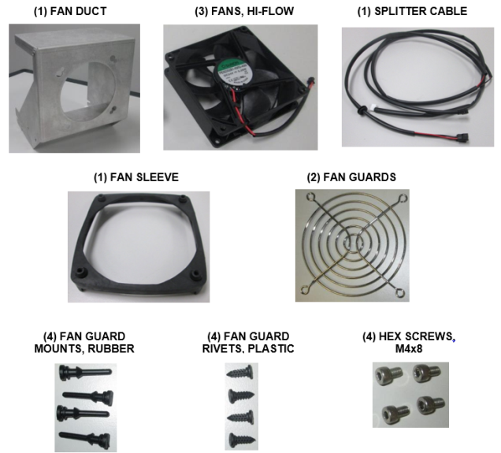
Time Required
30 Minutes (Add 1 hour if Fusion needs to be unfused to install the fan kit)
Procedure
- Shutdown the system and PC.
- Unfuse the Fusion from the Panther System.
Refer to the Unfuse Procedure.Note—If you are installing a new Panther Fusion System, you will not need to refer to the Unfuse Procedure. Continue with Step 3 below to install the cooling fan, then return to the Prepare the Panther System section of the Panther Fusion System Installation Procedure when instructed. - Assemble and install a cooling fan onto the fan duct:
- Install the black rubber fan sleeve around one of the new fans as shown. (The rubber sleeve is installed on the same side as the sticker.)

Caution—Ensure the sleeve is installed as shown, with the sticker visible on top and the flow arrow pointing up. 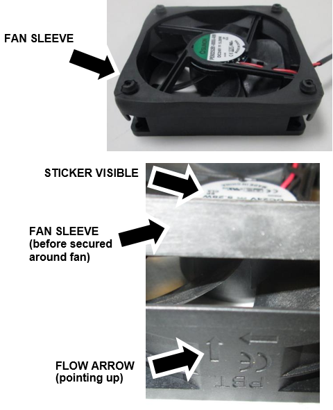
- Turn the fan over, and install a Fan Guard using the four Fan Guard Rubber Mounts.
Note—Pass the end of the Rubber Mount through the Fan Guard and the hole in the fan, then grab the end from underneath and pull firmly to secure the rubber mount. 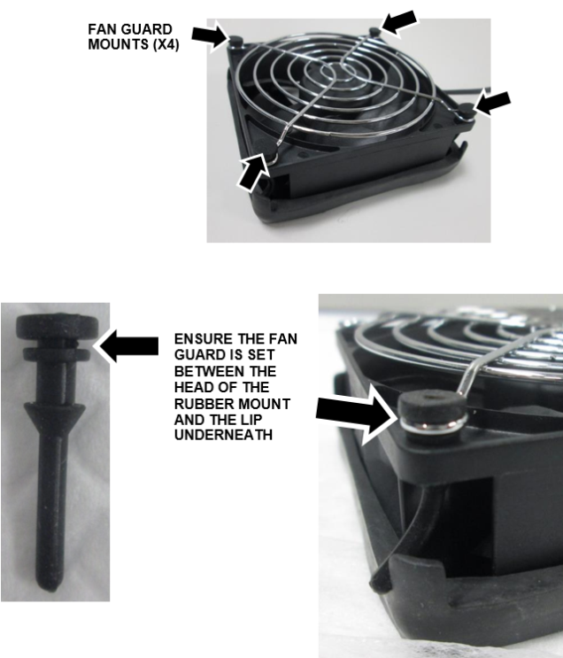
- Set the fan onto the front of the fan duct as shown, push the four rubber posts through the four large holes, then rotate until secure. The power wire can be at the bottom or side or the fan.
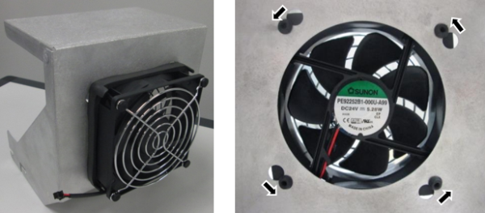
- Install the second Fan Guard on the inside of the fan duct using the 4 Fan Guard plastic Rivets.
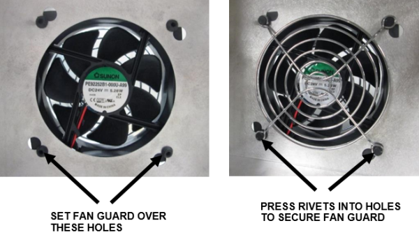
- Safely pull out the Mid Bay Drawer (remove luminometer injectors) and the Waste Drawer.
- Locate the 24V Power Supply at the back of the PC Bay. Note the pre-existing threaded screw holes at the top of the left and right sides of the power supply.
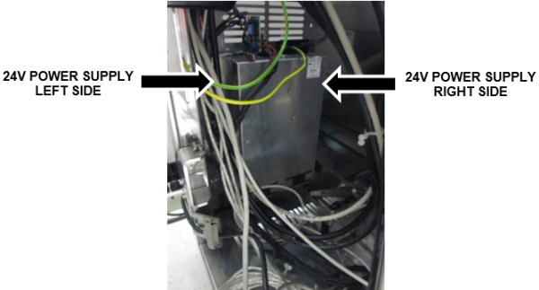
- Insert 2 M4x8 screws provided in the kit on each side of the power supply, into the pre-existing, empty holes near the top of each side. Do not tighten, leave space to slide in the new fan duct.
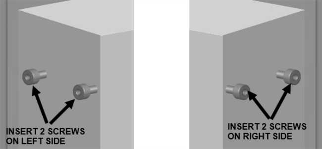
- Install the new fan duct with cooling fan attached onto the 24V power supply.
- First slide the fan duct straight down over the screw (on each side) towards the front of the power supply.
- Then slide the fan duct straight back to secure the duct in the rear screw.
- Tighten the 4 screws.
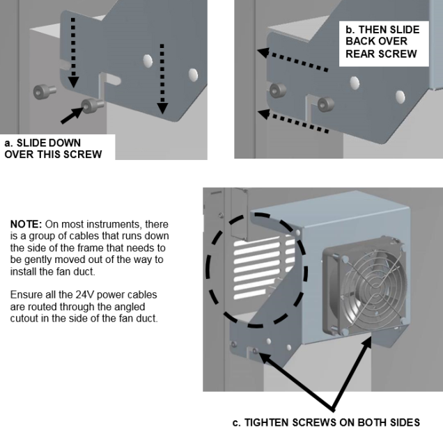
- Locate the existing dual chassis fan assembly above the Computer Bay.
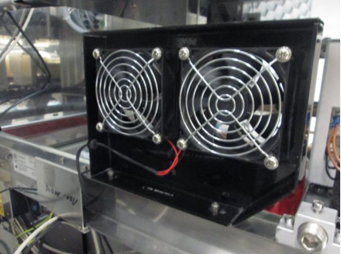
- Trace the fans power cable back to the COP. Disconnect the cable from the COP, take the cable out of any cable clamps/ties, and remove the cable from the frame.
Note—Remember the exact connection to the COP. Take a picture if necessary to ensure fan is re-connected in the same place. 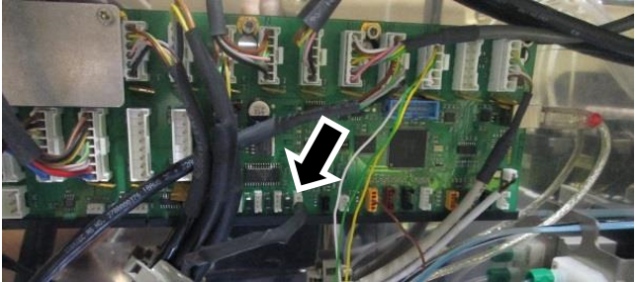
- Replace the two existing fans with two new ones from the kit.
Note—The hardware and rubber sleeve that holds each fan and fan guard in place on the existing dual fan assembly may vary. Whether metal screws or rubber fasteners are used, re-use all the existing mounting hardware to install the new fans. - Remove each of the existing fans from the bracket. (Either pull the fan straight out or push up and then out to free the fans.
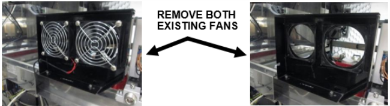
- Remove and save the fan guards and any mounting hardware from the old fans. (Old fans only have one fan guard, not one on both sides.) Discard the old fans.
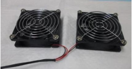
- Re-install both fan guards on the new fans and also the old rubber sleeves.
Caution—Ensure they are installed on the correct side of the fan, with the flow arrow pointing as shown. 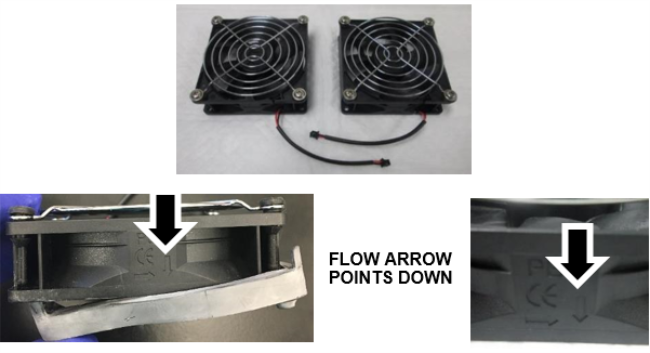
- Re-install both new fans onto the bracket, ensure the cables are on the bottom.
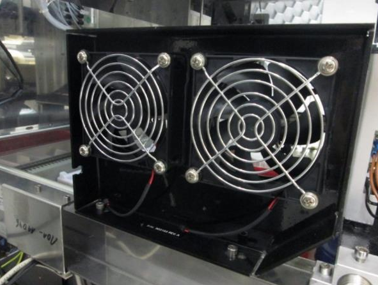
- Connect the two new fans to the new splitter cable. (The new fans connect to the end of the splitter cable that splits into two black connectors.) Slide the black rubber stop into the frame of the fan bracket. Pass the cable through the cable shroud on the frame.
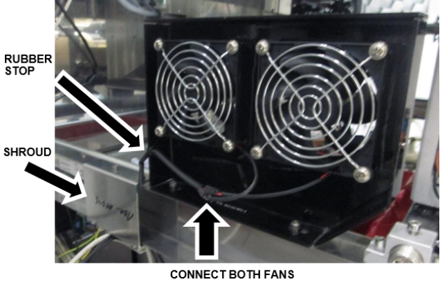
- Route the new splitter cable.
- Ensure the splitter cable has been routed through the shroud.
- Route the COP connector (white) through the rectangular opening at the back of the frame.
- Pass enough cable through so the single duct fan cable and connector (black) also passes through the opening.
- Route the COP end up through the cable channel in the frame. Follow existing cables. Open and use cable clamps where possible.
- Route the single duct fan cable down to the fan and connect.
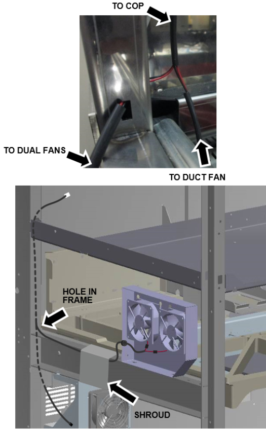
Caution—Ensure the new splitter cable will not interfere with the movement of the Rotary Distributor, Handoff Station, or Mid Bay Drawer. - Connect the new splitter cable to the same jack on the COP as the old fan cable.
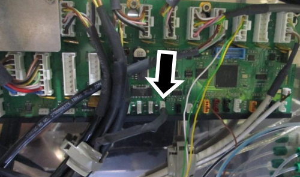
Verification
|
|
Note—If you are performing the Panther Fusion System Installation Procedure for a brand new Panther Fusion System, STOP and return to the Prepare the Panther Chassis section. Verification of the cooling fan operation is included in the Fusion Installation Procedure. |
The system can stay unfused to test the new cooling fans, as long as all cables remain connected.
- Turn on the system and PC.
- Log into the FSE Shield and start Service Software.
- On the 4. LiVaCo System and Drawer tab, Initialize the Cooling System.
- Turn On the Cover Fan Ctrl. and verify all three new fans turn on.
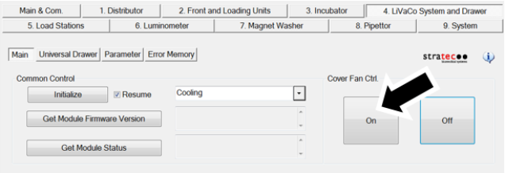
- Verify the air flow on all three fans is blowing as indicated.
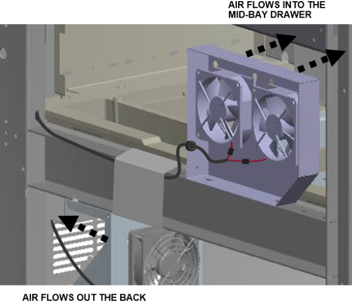
- Safely close the Mid Bay Drawer and Waste Drawer.
- Shutdown the system and PC.
- Fuse the Fusion to the Panther System.
 button at the top of the page to send feedback, comments, or change requests.
button at the top of the page to send feedback, comments, or change requests.